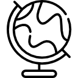

Обо мне

Образование
- 1992-1996 гг- Тетюшское педагогическое училище( учитель начальных классов)
- 1997-2002 г- Казанский государственный педагогический университет( исторический факультет)
Педагогический стаж
27 лет
Достижения
- Благодарность Главы Тетюшского муниципального района от 28. 08.2013г.
- Почетная грамота, МКУ "Отдел образования Исполнительного комитета Тетюшского муниципального района РТ", Пр. № 184-к от 30.09. 2014 г.
- Почетная грамота председателя республиканского комитета Профсоюза работников народного образования и науки Пр. № 19 от 06.02.2019г.
- Почетная грамота Главы Тетюшского муниципального района от 02.08. 2021 года.
Хобби
- Садоводничество,
- Краеведение.
Фотогаллерея